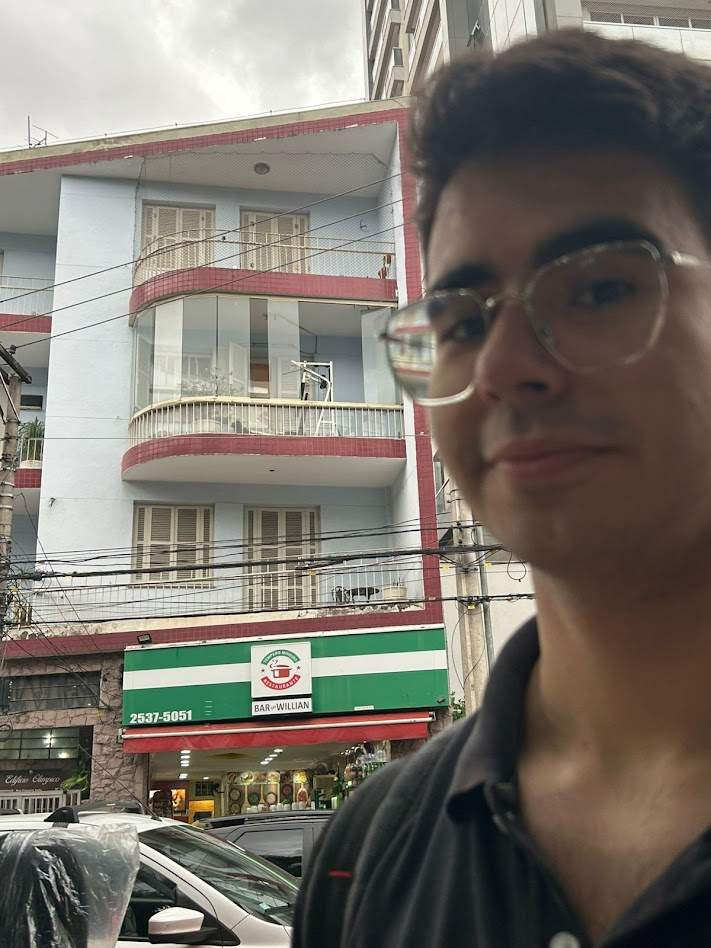

About Me
My name is Willian Alves Canuto, I am from Brazil and I am a student at BYU-Idaho. I am majoring in Web Design and Development. I am a member of the Church of Jesus Christ of Latter-day Saints. I like to be a hardworking person and I try always looking for ways to improve myself. I am a very friendly person and I love to make new friends. I am always looking for ways to help others and make the world a better place. And I love to play video games, play music like in piano and beeing a temple worker in São Paulo, Brazil.
São Paulo, Sp - Brazil
São Paulo is the biggest city in Brazil, a lot of importants events and others things is here, like the Brasil Game Show, when Russel M. Nelson cames to Brazil in 2019, he was in São Paulo, and the first temple of Brazil is here too.